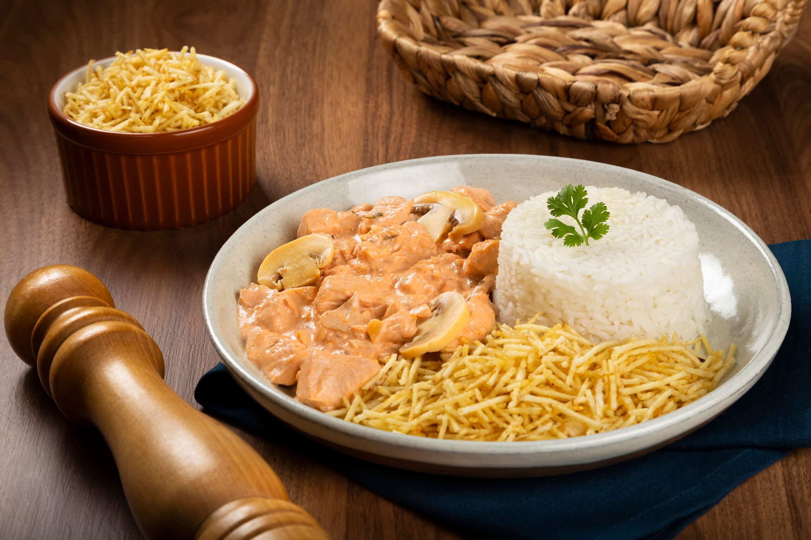
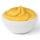
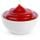

Strogonoff
Ingredientes (6porções)
 500 g de patinho cortado em
cubinhos;
500 g de patinho cortado em
cubinhos;-
 1 cebola média bem
picadinha;
1 cebola média bem
picadinha; - 1 colher (sopa) de mostarda;
- sal e pimenta a gosto;
.webp) 1 caixa de creme de
leite;
1 caixa de creme de
leite;
 1 colher (sopa) de óleo;
1 colher (sopa) de óleo;
- 1 colher (sopa) de ketchup
- 1 colher (sobremesa) de alho triturado
- cebolinha e salsinha picadinha a gosto
Modo de preparo

Modo de
preparo:45min.
- Em uma panela coloque o óleo, a cebola picada e o alho para dourar.
- Em seguida, coloque a carne cortada em cubinhos para fritar.
- Abaixe o fogo e deixe cozinhar por alguns minutos, até a carne ficar molinha. Se necessário, vá acrescentando água aos poucos até atingir o cozimento desejado.
- Acrescente a mostarda e o ketchup e misture bem.
- Tempere com sal e pimenta a gosto.
- Acrescente a cebolinha e a salsinha picadas e misture.
- Desligue o fogo e acrescente o creme de leite.